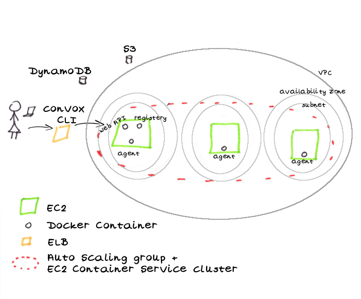

Your own Heroku in 5 minutes
convox is an open source project started by 3 ex-Heroku engineers with the goal of having your own Heroku-like setup running on AWS. It follows The 12-Factor App that not surprisingly was written by one of Heroku’s founders.
Let’s get started. all you need is to install the CLI (called convox) and than than run convox install. Wait 5 minutes and your AWS looks like this:

That’s all you need to run your your apps and services. Let’s deploy a ruby web app with Redis and PostgreSOL:
git clone git@github.com:convox-examples/sinatra.git
cd sinatra
convox apps create
convox deploy
After a minute you’ll see a URL of your new app. You can point your DNS to this host to have nice URL (something like app1.my-server.com). Behind the scenes convox is doing the following:
- Create an ELB for your app (ports 80 and 443)
- Gzip your local folder to one of the EC2s
- Build an image
- Upload it to it’s private docker registry (stored on S3)
- Pull the image and run it on an EC2
- Register the EC2 with the ELB
Deploying a new version is just a matter of running the deploy again.
What if you want to scale your app and have 3 instances of it running?
convox scale --count 3
Here is how it looks like:

convox is not the only player in the Docker management world. There are others such as Deis, Flynn, Kubernetes, and Docker Swarm. The beauty of convox is its usage of battle tested building blocks - instead of using CoreOS, fleet, etcd and custom schedulers it uses EC2, S3, ELB, Auto Scaling group, EC2 Container Service, DynamoDB, and other familiar friends. The downside might be the coupling to Amazon’s platform. But if that’s your poison, you’ll feel right at home with convox.
A good indicator of a healthy open source project is the speed it takes to ramp up new contributors and the friendliness of it’s community. It only took me a few hours to add support for dedicated EC2 (a requirement for HIPAA).

Issues are being responded within mintues and there is a slack channel where the core team hang out. Email David to get an invite or ask any questions.
Thanks @cyx for telling me about this project and destroying my weekend